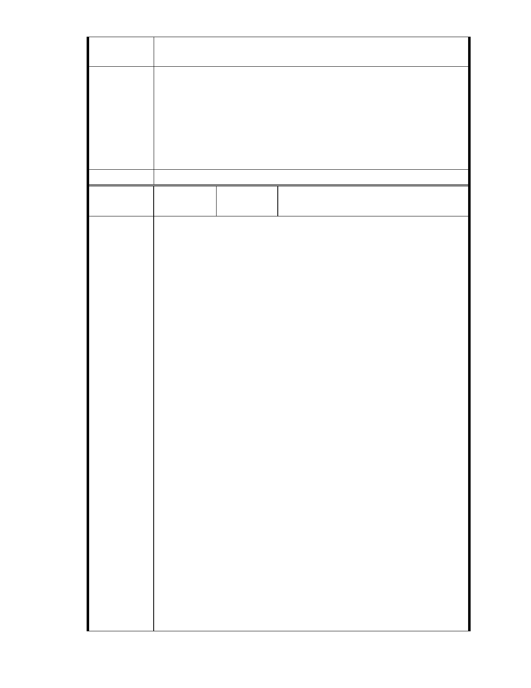

案」（簡稱慈濟內湖基地案）之相關審查會議，以便本會關注並提供
相關民間之建議。
一、本案申請範圍於慈濟購得前已遭非法填土，實不具保護區之功能，
今申請單位欲興辦社會福利事業，故依法辦理都市計畫變程序；目
前申請方案較先前方案已大幅降低開發強度、調整使用項目並承諾
市府說明
大面積滯洪設施等回饋事項，顯示申請單位欲改善現況之誠意。
二、相關陳情意見將納入本案審查人民意見，依法定程序辦理。
三、後續審理程序將要求申請人加強與在地區民、社會大眾，就基地現
況、規劃方案及環境助益作為等方面加強溝通。
委 員 會 決 議 同編號 1。
編 號 12
陳情人
中華民國荒野保護協會（99.11.5 於本會網
站傳送資料）
臺北市都市計畫委員會第 619 委員會議
十一、變更臺北市內湖區成功路 5 段大湖公園北側部分保護區及道路用
地為社會福利特定專用區主要計畫案
荒野保護協會 發言稿
就個案而言，幾個問題請教，懇請市府務必詳細回答以釐清爭議。
陳情理由
1. 當初這塊地方會被畫設為保護區的具體原因為何？請條列說明這
裡具備了哪些環境因子？包括：生態上的、防災方面的等等。
2. 再來檢視這個申請變更的計畫案，已經造成和未來可能對這個地
方的環境造成什麼樣的影響？（對照分析）
3. 然後才看整個設計是否足以迴避或是彌補對這個保護區的整體以
及週邊環境所產生的負面影響？
建議除了慈濟提出的報告之外，市政府是否可協助慈濟提出針對此保護
區「當初畫設時」的相關環境因子資料與開發前後對照分析？以利委員
瞭解評估。且不該用目前使用現況的資料來做分析，因為本來就已經是
違法使用。
另針對本次會議民眾陳情的問題，懇請製作意見回覆表，提前提供相關
資訊，以利下次會議審查進行較快聚焦。
整體建議上，透過這個計畫審查我們希望可以聽到市政府回應對「保護
區的發展政策為何？」以及「土地變更的原則為何？」。這些不只是一套
- 16 -